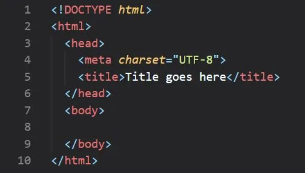

Question 1
WhenHTML5 has become a standard?What were the main reasonsfordeveloping new standard?
HTML5 became a standard in October 2014. The main reasons for developing a new standard were to address the limitations of previous versions of HTML, improve support for multimedia content, enhance accessibility, and provide better structure and semantics for web documents.
Question 2
What is a difference between W3C HTML5 and WHATWG HTML Living Standard?
The main difference between W3C HTML5 and WHATWG HTML Living Standard is in the development process and governance. The W3C HTML5 standard is developed and maintained by the World Wide Web Consortium (W3C), while the WHATWG HTML Living Standard is a continuously updated version of HTML that is developed collaboratively by the Web Hypertext Application Technology Working Group (WHATWG).
Question 3
What is the minimal HTML page code?
The minimal HTML page code includes the following:
Question 4
Comment on semanticand presentationalmarkup. Why presentationalmarkup is considered deprecated now?
Semantic markup focuses on using HTML elements to convey the meaning and structure of the content, making it more accessible to users and search engines. Presentational markup, on the other hand, involves using HTML elements for styling and layout purposes, which is now considered deprecated because it mixes content with presentation, making it harder to maintain and update websites.
Question 5
How you can check browsersupport for particular tag or attribute?
To check browser support for a particular tag or attribute, you can use websites like caniuse.com or MDN Web Docs. These resources provide information on browser compatibility for various web technologies.
Question 6
What are the audio and video formats, officially supported byHTML standard? What happens if you use other format?
The audio formats officially supported by HTML standard are MP3, Ogg, and WAV. The video formats supported are MP4, WebM, and Ogg. If you use other formats that are not supported by browsers, the content may not be displayed or played correctly on all devices and browsers. It's important to use the recommended formats to ensure compatibility and consistency across different platforms.